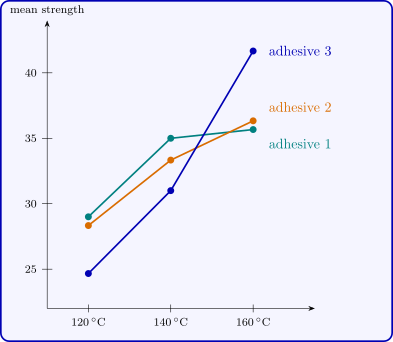

7.2 The two-factor factorial design
Suppose there are \(n \ge 2\) replicates of each of the \(ab\) treatment combinations, run in random order (a completely randomised design with \(ab\) treatments). Let \(y_{ijk}\) be the \(k\)th observation at level \(i\) of \(A\) and level \(j\) of \(B\). The two-factor fixed effects model is \[ y_{ijk} = \mu + \tau _i + \beta _j + (\tau \beta )_{ij} + \varepsilon _{ijk} , \] for \(i = 1, \dots , a\), \(j = 1, \dots , b\) and \(k = 1, \dots , n\), with the side conditions above and independent \(N(0, \sigma ^2)\) errors. The hypotheses of interest are \[ H_0^A : \text {all } \tau _i = 0 , \qquad H_0^B : \text {all } \beta _j = 0 , \qquad H_0^{AB} : \text {all } (\tau \beta )_{ij} = 0 . \]
Example 7.2.1. The bond strength of a joint (MPa) was studied for three adhesives cured at three temperatures, with three joints for each of the nine combinations, all \(27\) made in random order:
| adhesive | \(120\,^\circ \)C | \(140\,^\circ \)C | \(160\,^\circ \)C |
| \(1\) | \(29\), \(28\), \(30\) | \(35\), \(36\), \(34\) | \(35\), \(35\), \(37\) |
| \(2\) | \(31\), \(28\), \(26\) | \(31\), \(36\), \(33\) | \(35\), \(38\), \(36\) |
| \(3\) | \(25\), \(23\), \(26\) | \(32\), \(31\), \(30\) | \(43\), \(43\), \(39\) |
The cell totals \(y_{ij\cdot }\) are
| adhesive | \(120\,^\circ \)C | \(140\,^\circ \)C | \(160\,^\circ \)C | \(y_{i\cdot \cdot }\) |
| \(1\) | \(87\) | \(105\) | \(107\) | \(299\) |
| \(2\) | \(85\) | \(100\) | \(109\) | \(294\) |
| \(3\) | \(74\) | \(93\) | \(125\) | \(292\) |
| \(y_{\cdot j\cdot }\) | \(246\) | \(298\) | \(341\) | \(885\) |
and \(\sum \sum \sum y_{ijk}^2 = 29687\).
Proposition 7.2.2. The least squares estimates are \begin {gather*} \hat \mu = \bar y_{\cdot \cdot \cdot } , \qquad \hat \tau _i = \bar y_{i\cdot \cdot } - \bar y_{\cdot \cdot \cdot } , \qquad \hat \beta _j = \bar y_{\cdot j\cdot } - \bar y_{\cdot \cdot \cdot } , \\ \widehat {(\tau \beta )}_{ij} = \bar y_{ij\cdot } - \bar y_{i\cdot \cdot } - \bar y_{\cdot j\cdot } + \bar y_{\cdot \cdot \cdot } , \end {gather*} so that the fitted value is the cell mean, \(\hat y_{ijk} = \bar y_{ij\cdot }\).
Proof. The model places no restriction on the \(ab\) cell means \(\mu _{ij}\), so it is a one-way model with \(ab\) treatments, whose least squares fit is \(\hat \mu _{ij} = \bar y_{ij\cdot }\) by Section 3. The estimates of \(\mu \), \(\tau _i\), \(\beta _j\) and \((\tau \beta )_{ij}\) are the same functions of the \(\bar y_{ij\cdot }\) as the parameters are of the \(\mu _{ij}\), and they satisfy the side conditions. □
The deviation of an observation from the grand mean splits into four parts, \[ y_{ijk} - \bar y_{\cdot \cdot \cdot } = (\bar y_{i\cdot \cdot } - \bar y_{\cdot \cdot \cdot }) + (\bar y_{\cdot j\cdot } - \bar y_{\cdot \cdot \cdot }) + (\bar y_{ij\cdot } - \bar y_{i\cdot \cdot } - \bar y_{\cdot j\cdot } + \bar y_{\cdot \cdot \cdot }) + (y_{ijk} - \bar y_{ij\cdot }) . \]
Theorem 7.2.3. In the balanced two-factor design, \[ SST = SS_A + SS_B + SS_{AB} + SSE , \] where \begin {align*} SS_A &= bn\sum _i(\bar y_{i\cdot \cdot } - \bar y_{\cdot \cdot \cdot })^2 , \\ SS_B &= an\sum _j(\bar y_{\cdot j\cdot } - \bar y_{\cdot \cdot \cdot })^2 , \\ SS_{AB} &= n\sum _i\sum _j(\bar y_{ij\cdot } - \bar y_{i\cdot \cdot } - \bar y_{\cdot j\cdot } + \bar y_{\cdot \cdot \cdot })^2 , \\ SSE &= \sum _i\sum _j\sum _k(y_{ijk} - \bar y_{ij\cdot })^2 , \end {align*}
with \(a - 1\), \(b - 1\), \((a - 1)(b - 1)\) and \(ab(n - 1)\) degrees of freedom. The four sums of squares are independent under normality, and \begin {gather*} E(MS_A) = \sigma ^2 + \frac {bn\sum \tau _i^2}{a - 1} , \qquad E(MS_B) = \sigma ^2 + \frac {an\sum \beta _j^2}{b - 1} , \\ E(MS_{AB}) = \sigma ^2 + \frac {n\sum \sum (\tau \beta )_{ij}^2}{(a - 1)(b - 1)} , \qquad E(MSE) = \sigma ^2 . \end {gather*} Each null hypothesis is tested by the ratio of the corresponding mean square to \(MSE\), which has an \(F\) distribution under that hypothesis.
Proof. Let \(H_A\), \(H_B\), \(H_{AB}\) and \(H_0\) be the projections replacing each observation by its \(A\)-level mean, its \(B\)-level mean, its cell mean and the grand mean. Balance gives \(H_AH_B = H_0\), and \(H_AH_{AB} = H_A\), \(H_BH_{AB} = H_B\), since a cell lies within one level of each factor. The four matrices \[ H_A - H_0 , \qquad H_B - H_0 , \qquad H_{AB} - H_A - H_B + H_0 , \qquad I - H_{AB} \] are then symmetric, idempotent and mutually orthogonal, with traces \(a - 1\), \(b - 1\), \(ab - a - b + 1\) and \(abn - ab\), and they sum to \(I - H_0\). The quadratic forms in \(\mathbf Y\) are the four sums of squares, which gives the partition, and Theorem 3.1.4 gives independence and the distributions. For the expectations, apply each matrix to the mean vector with entries \(\mu + \tau _i + \beta _j + (\tau \beta )_{ij}\): the results have entries \(\tau _i\), \(\beta _j\), \((\tau \beta )_{ij}\) and \(0\), by the side conditions, and Lemma 3.1.2 completes the proof. □
For hand calculation, with \(abn = N\), \begin {gather*} SST = \sum \sum \sum y_{ijk}^2 - \frac {y_{\cdot \cdot \cdot }^2}{N} , \qquad SS_A = \frac {1}{bn}\sum _iy_{i\cdot \cdot }^2 - \frac {y_{\cdot \cdot \cdot }^2}{N} , \\ SS_B = \frac {1}{an}\sum _jy_{\cdot j\cdot }^2 - \frac {y_{\cdot \cdot \cdot }^2}{N} , \qquad SS_{\mathrm {Subtotals}} = \frac 1n\sum _i\sum _jy_{ij\cdot }^2 - \frac {y_{\cdot \cdot \cdot }^2}{N} , \\ SS_{AB} = SS_{\mathrm {Subtotals}} - SS_A - SS_B , \qquad SSE = SST - SS_{\mathrm {Subtotals}} . \end {gather*}
Example 7.2.4. For the adhesive data, \(N = 27\) and the correction factor is \(885^2/27 = 29008.33\). Then \begin {align*} SST &= 29687 - 29008.33 = 678.67 , \\ SS_{\mathrm {Adhesives}} &= (299^2 + 294^2 + 292^2)/9 - 29008.33 = 2.89 , \\ SS_{\mathrm {Temperatures}} &= (246^2 + 298^2 + 341^2)/9 - 29008.33 = 502.89 , \\ SS_{\mathrm {Subtotals}} &= (87^2 + 105^2 + \dots + 125^2)/3 - 29008.33 = 624.67 , \end {align*}
so \(SS_{AB} = 624.67 - 2.89 - 502.89 = 118.89\) and \(SSE = 678.67 - 624.67 = 54.00\).
| source | SS | df | MS | \(F_0\) | \(p\) |
| adhesives (\(A\)) | \(2.89\) | \(2\) | \(1.44\) | \(0.48\) | \(0.63\) |
| temperatures (\(B\)) | \(502.89\) | \(2\) | \(251.44\) | \(83.81\) | \(< 0.0001\) |
| interaction (\(AB\)) | \(118.89\) | \(4\) | \(29.72\) | \(9.91\) | \(0.0002\) |
| error | \(54.00\) | \(18\) | \(3.00\) | ||
| total | \(678.67\) | \(26\) |
The interaction is highly significant (\(F_{0.05,4,18} = 2.93\)), and so is temperature. The adhesive main effect is not significant, but because of the interaction this does not mean that the adhesives are alike. Figure 8 shows why.

Comparing means when there is interaction
With a significant interaction, the adhesives are compared separately at each temperature. Within one temperature the three cell means are each based on \(n = 3\) observations, and Tukey’s method applies with the pooled \(MSE\): \[ HSD = q_{0.05}(3, 18)\sqrt {MSE/n} = 3.61\sqrt {3.00/3} = 3.61 . \]
- At \(160\,^\circ \)C the means are \(35.67\), \(36.33\), \(41.67\): adhesive \(3\) is stronger than \(1\) (by \(6.00\)) and \(2\) (by \(5.33\)).
- At \(140\,^\circ \)C the means are \(35.00\), \(33.33\), \(31.00\): adhesive \(1\) is stronger than \(3\) (by \(4.00\)); the other differences are not significant.
- At \(120\,^\circ \)C the means are \(29.00\), \(28.33\), \(24.67\): adhesive \(3\) is weaker than \(1\) (by \(4.33\)) and \(2\) (by \(3.67\)).
The practical conclusion is a recommendation about combinations: adhesive \(3\) cured at \(160\,^\circ \)C, which gives the strongest joints, but adhesive \(3\) should not be used if a lower curing temperature is unavoidable. A one-factor analysis of the adhesives, or an analysis that ignored the interaction, would have concluded that the adhesive does not matter.
Checking the model
The residuals are \(e_{ijk} = y_{ijk} - \bar y_{ij\cdot }\). For the adhesive data the largest is \(2.67\) in absolute value, \(1.54\) standard deviations, and Bartlett’s test on the nine cells gives \(p = 0.83\). As in Section 3, the residuals should also be plotted against the fitted values and on a normal probability plot.
Questions on this section
Stuck on something here? Ask below and it stays attached to this topic.